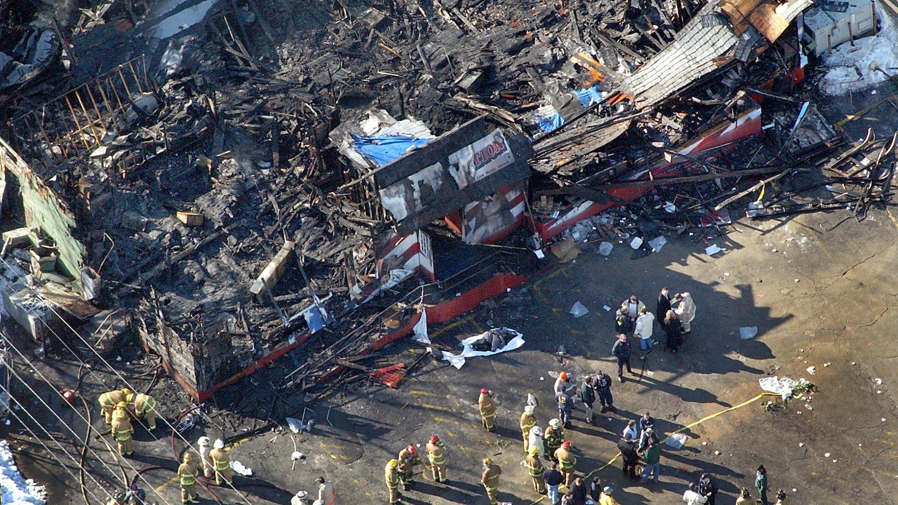

THE STATION NIGHTCLUB FIRE
Fatal Spark: On the evening of February 20, 2003, The Station nightclub in West Warwick, Rhode Island, was packed well beyond its legal capacity with fans excited to see the 1980s rock band Great White. Just seconds into the band's opening song, the tour manager ignited indoor pyrotechnics—sparking devices known as "gerbs." The fountains of sparks shot 15 feet into the air, immediately striking and igniting the acoustic foam that the club owners had cheaply installed on the walls and ceiling around the stage to muffle noise complaints.

/>Illusion of the Show: For the first crucial 10 to 20 seconds, many patrons assumed the growing flames were part of the theatrical act. By the time the band stopped playing and the lead singer remarked, "Wow... this ain't good," the fire was completely out of control. The cheap, highly combustible polyurethane foam acted like solid gasoline. It created a horrific, rapidly advancing fire and unleashed a blinding, suffocating cloud of thick black smoke laden with toxic gases (including carbon monoxide and hydrogen cyanide) that rolled over the crowd.
Key Facts
Date: February 20, 2003
Location: West Warwick, Rhode Island
Casualties: 100 dead, over 200 severely injured; triggered massive national reforms in building and fire safety codes for public entertainment venues.
Cause: The use of illegal indoor pyrotechnics that ignited highly flammable, non-standard acoustic foam, heavily compounded by severe overcrowding, blocked exits, and the lack of an automatic sprinkler system.
The Deadly Bottleneck: Panic instantly consumed the dark, overcrowded room. Although the building had four total exits, human instinct took over, and the vast majority of the crowd blindly rushed toward the main front entrance they had used to come in. This created a massive, deadly bottleneck in the narrow entry corridor. In the desperate crush to escape the toxic smoke and searing heat, people tripped, fell, and piled on top of one another, completely wedging the doors shut and trapping those behind them. Compounding the tragedy, the older wooden building completely lacked an automatic fire sprinkler system. In less than six minutes, the entire structure was engulfed in a catastrophic inferno.
Lesson: The Station nightclub fire is the fourth-deadliest nightclub fire in United States history. Because a local news cameraman was inside filming a piece on nightclub safety that very night, the horrifying speed of the fire and the subsequent tragedy were captured on video and broadcast worldwide, deeply shocking the public. The disaster exposed severe negligence regarding fire safety inspections, the dangers of unapproved building materials, and the lethal risks of overcrowding. It directly sparked sweeping national